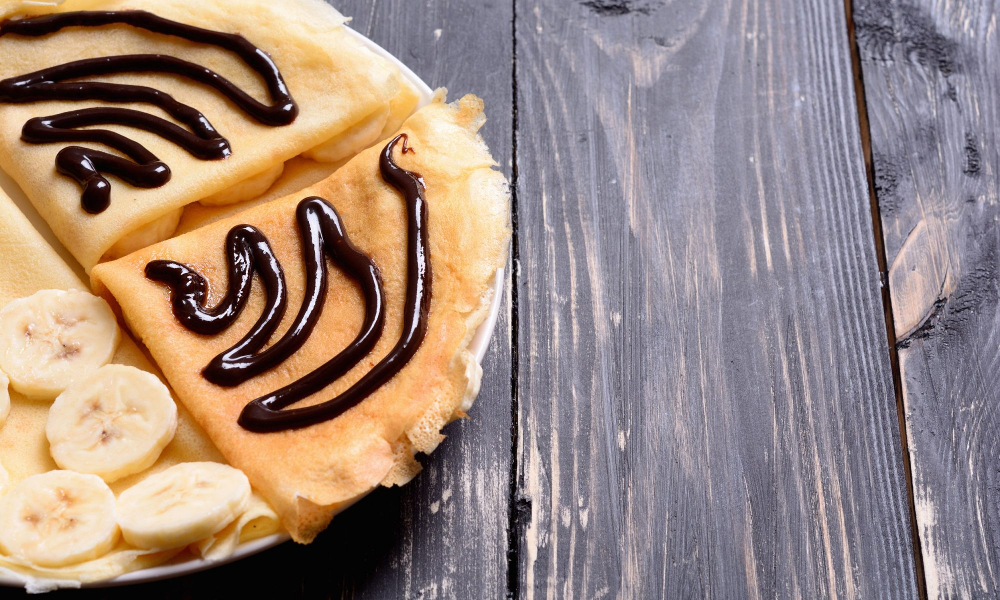

Тонкие банановые блинчики

Славянские народы приход весны встречают целую неделю приятной гастрономической традицией – выпеканием блинов. Подают угощение со сметаной, вкусными соусами или начинками. Начинки могут быть сладкими и несладкими – что пожелает хозяйка или ее родные. Одной из наиболее популярных разновидностей сытного угощения являются банановые блинчики. Рецепт такого блюда предлагаем ниже, готовьте в удовольствие!
Вам понадобится:
Ингредиенты для блинов:
250 мл. молока;1,5 ст. л. сахара;1,5 стакана муки;2 яйца;2 ст. л. масла растительного;Щепотка соли.
Ингредиенты для начинки:
2 банана;100 гр. изюма;¼ ч. л. корицы;100 гр. ядер грецких орехов;2 ст. л. сахара;30 гр. масла сливочного.
Приготовление:
- Для приготовления теста используйте глубокую миску. В ней взбейте яйца с сахаром и солью.
- Добавьте 1/3 молока и муки, размешайте венчиком.
- Добавьте еще часть молока и еще часть муки, размешайте до однородности.
- Добавьте остаток молока и муки, взбейте тесто на банановые блинчики. Рецепт включает масло, используйте нерафинированное, чтобы не было запаха. Перемешайте, чтобы масло равномерно вмешалось в тесто.
- Выпекайте тонкие блины на сковороде, наливая примерно ½ стандартного половника теста и разравнивая его по дну. Когда подрумянятся края, переверните на другую сторону, подрумяньте.
- Каждый блин смазывайте сливочным маслом по краям, чтобы они не засыхали и не трескались.
- Для приготовления начинки сахар насыпьте на поверхность сковороды, равномерно рассыпьте его по дну.
- Пока сахар растает и нагревается до образования золотистой карамели, очистите, нарежьте кубиками основной ингредиент на банановые блинчики. Рецепт готовится быстро, получается вкусно.
- На отдельной сковороде без масла подрумяньте орехи.
- Добавьте в сковороду изюм, сливочное масло, бананы и корицу.
- Перемешайте, добавьте обжаренные орехи.
- Перемешайте, потомите 2 минуты, выключайте.
- На готовый блин выложите 1-2 ст. л. банановой начинки, сверните конвертиком или трубочкой.